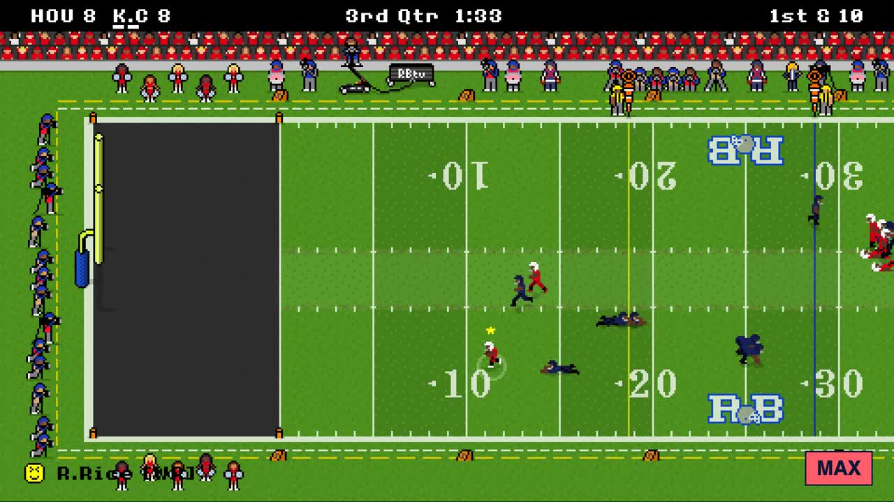

You can play Retro Bowl online right now, free, in your browser. This version is built for playing online against another person: you and a friend, or you and someone you are matched with, each on your own device, head-to-head, live. No download, no app store, no account.
PLAY RETRO BOWL ONLINE →Free. Chromebook, Windows, Mac, iPhone and Android.
BLOCKED AT SCHOOL? PLAY ON GOOGLE SITES
The same game and the same room codes, on Google Sites.

Nobody to play? The plain single-player Retro Bowl runs online too, at main-retro-bowl.vercel.app. Or open WATCH LIVE and watch the online games being played right now.
Anywhere a web page opens: a school or library Chromebook, a laptop, an iPhone or an Android phone (the game turns sideways on a phone). If your network blocks one address, the same game is at several others; see the unblocked links.
Can you play Retro Bowl online? Yes. Retro Bowl 2P runs Retro Bowl in your browser, for two players online or one player on their own, with nothing to install.
Is Retro Bowl online free? Yes, completely free, with no account and no download.
Can I play Retro Bowl online with friends? Yes. One of you taps PLAY 2P and shares the 4-letter room code; the other joins with it. Each of you plays on your own device.
Can I play Retro Bowl online against strangers? Yes. FIND A PLAYER matches you with someone who is looking for a game at the same time.
Is this the official Retro Bowl? No. It is a fan-made online multiplayer mode built on the browser version of the game. The official Retro Bowl by New Star Games is on the App Store, Google Play and Poki.
What if the site is blocked? Try the other addresses on the unblocked page. It is the same game everywhere, and a room code made on one works on all of them.
Retro Bowl 2P is a free fan-made multiplayer mode. It is not affiliated with or endorsed by New Star Games. The official Retro Bowl is on the App Store, Google Play and Poki. Built by Local Web Tech.